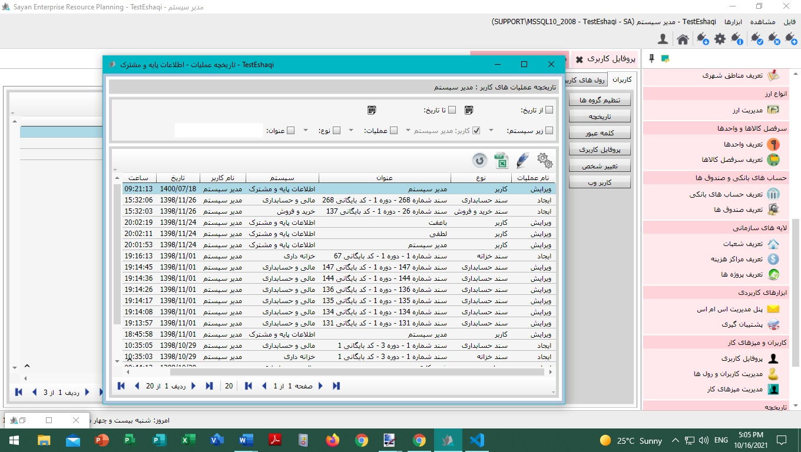
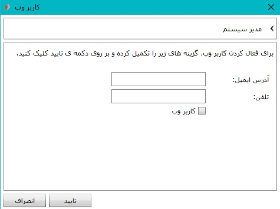

برای اعمال تنظیمات « مدیریت کابران و رول ها»، ابتدا بر روی دکمه «تنظیم کاربران کلیک کنید». همانطور که مشاهده می کنید، امکان نمایش و انتخاب « انواع رول ها» در این تصویر وجود دارد. شما می توانید بر حسب نیاز رول های کاربریتان را در حالت انتخاب قرار دهید.

در بخش «تاریخچه» امکان مشاهده لیست صفحات، محاسبات و فعالیت هایی است که شما در نرم افزار انجام داده اید.تصویر زیر بیانگر ثبت فعالیتها می باشد. 
برای تغییر کلمه عبور، شما می توانید دکمه کلمه عبور را کلیک کنید.
همانطور که مشاهده میفرمایید، امکان تغییر کلمه عبور برای شما پیاده سازی
است. برای این منظور، کلمه عبور موردنظر و تکرار آن را وارد و
پس از آن دکمه تایید را کلیک کنید.

همانطور که در بخش «پروفایل کاربری» توضیح داده شد،
در صورتیکه شخص موردنظرتان را برای رول کاربری تعیین نموده باشید،
امکان تغییر شخص در بخش «پروفایل کاربری» فراهم شده است. برای این منظور،
کافی است ، دکمه تغییر شخص را کلیک نمایید، پس از اعمال تغییرات
دکمه تایید را کلیک کنید.

امکان تعریف و دسترسی کاربران به وب سرویس نرم افزار «کاربر وب» با کلیک دکمه، برای شما فراهم گردیده است. همانگونه که در تصویر ذیل مشاهده می کنید، با ثبت آدرس ایمیل و شماره تلفن همراه کاربر موردنظرتان امکان پذیر است. لطفا گزینه «کاربر وب» را درحالت انتخاب قرار داده و دکمه تایید را کلیک کنید. 